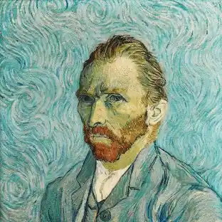
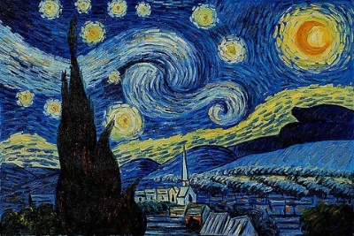
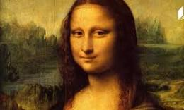
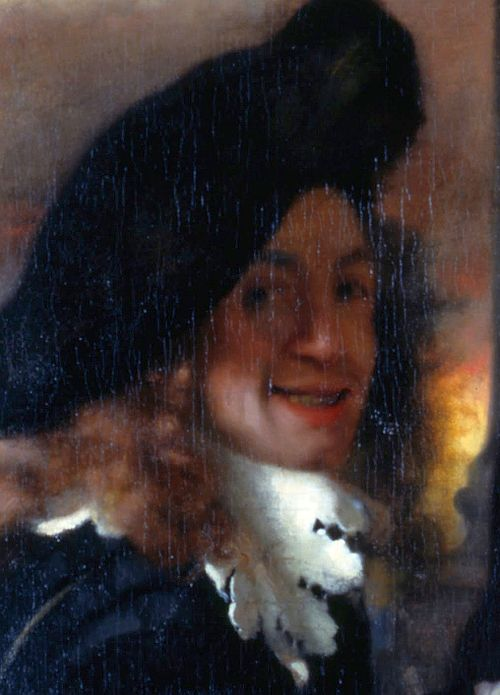
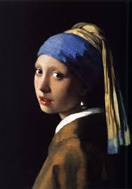

ვინსენტ ვან გოგი Vincent van Gogh


Vincent van Gogh (1853-1890) Dutch post-impressionist painter known for his bold, expressive brushwork and vivid colors. Created iconic works like "Starry Night," "Sunflowers," and numerous self-portraits. Despite producing over 2,000 artworks in just a decade, he sold only one painting during his lifetime. Struggled with mental illness and died at age 37 from a gunshot wound. His emotional, turbulent style profoundly influenced modern art.
ლეონარდო და ვინჩი Leonardo da vinci


Leonardo da Vinci (1452-1519) Italian Renaissance polymath - painter, inventor, scientist, engineer, and anatomist. Created masterpieces like "Mona Lisa" and "The Last Supper." Known for his detailed notebooks filled with mirror writing, anatomical studies, and engineering designs centuries ahead of his time. Designed flying machines, tanks, and hydraulic systems. Embodied the Renaissance ideal of the universal genius who excelled across multiple disciplines.
იან ვერმეერი Jan Vermeer


Johannes Vermeer (1632-1675) Dutch Baroque painter from Delft who specialized in intimate domestic scenes. Famous for his masterful use of light and his signature ultramarine blue pigment. Created only about 35 known paintings, including "Girl with a Pearl Earring" and "The Milkmaid." His works feature remarkable attention to detail and luminous quality. Remained relatively unknown until the 19th century but is now considered one of the greatest painters of the Dutch Golden Age.